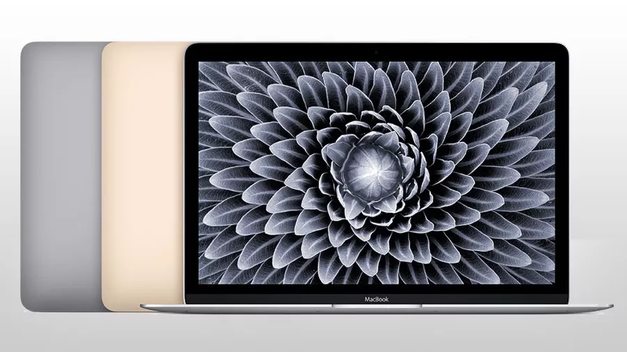

The Story of the Mac
By Christian Wilcox
-
Mac in the Modern Era

Source: TechRadar.com
- In 2008, Apple announced that their Mac Pros will offer 8-core processing as a standard, and that
their iMacs, MacBooks, and MacBook Pros would be faster. But their big announcement that year would
be the MacBook Air, a lighter laptop with a multi-touch trackpad. The next year would feature
the release of Mac OS X 10.6 Snow Leopard and the new 13.3 inch version of the MacBook Pro.
2010 sees the Mac App Store shine and the release of the MacBook Air. OS X Lion makes history
with its release in 2011, as it is the first version of OS X to be released on a disc format. It was
instead downloaded via the Mac App Store. OS X 10.8 Mountain Lion releases in 2012 and brings a more
iOS-like style to the Mac. The MacBook Pro received a new Retina display along with HDMI ports. 2013
saw the release of OS X 10.9 Maverick and the Mac Pro. In 2015, Apple had a new vision for
Macs with the new MacBook. The 2015 MacBook (and the MacBooks beyond) would have design elements
from the newest iPhones and iPads. Apple released the iMac Pro in 2017. This was one of
Apple's most powerful products, coming with 32 gigabytes of RAM, Intel Xeon processors, and an AMD
Radeon Pro Vega 56 graphics card. It was also one of the most expensive products Apple ever
released, as just the base model retailed for $4,999. Apple upgraded many of their products in 2018,
including giving the MacBook Air a thinner design with a better screen.
Home